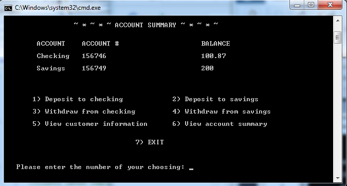
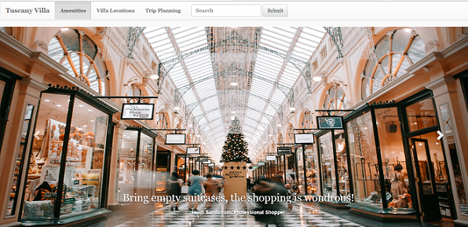
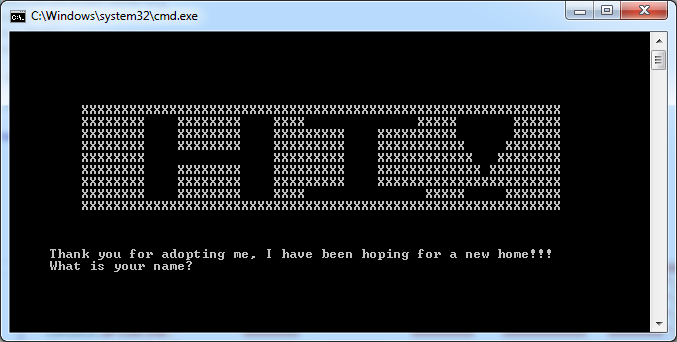
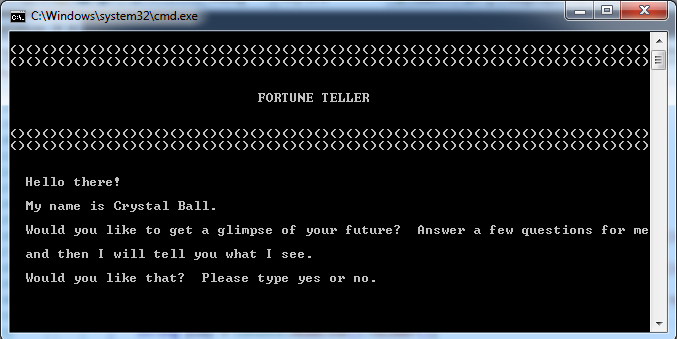
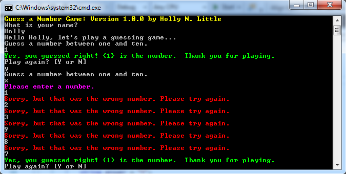
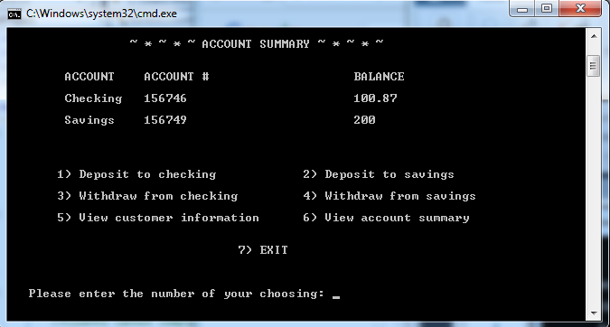

A Banking Application
A console application written in C#. This using object-oriented programming concepts, abstract classes.
The following are projects that I created using C#, CSS3, HTML5, JavaScript and ASP.NET MVC. Please, click on the images to view the source code on GitHib.
A website advertising for a spa located in Tuscany, Italy. I built this project using HTML5, CSS3, Twitter Bootstrap components and the Google Map API.
A console application game written in C#. This game gives the player points for being a responsible caretaker. This would be a good game for encouraging responsibility in children.
Another console that I wrote using C#. This one gives the user a prediction based on the user's answers to a series of questions.
A console application guessing game written in C#. This one was fun, because I learned how to use color in a console applicaition.
A console application written in C#. This using object-oriented programming concepts, abstract classes.
